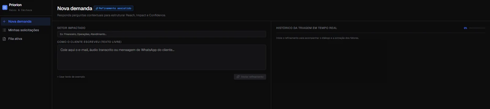
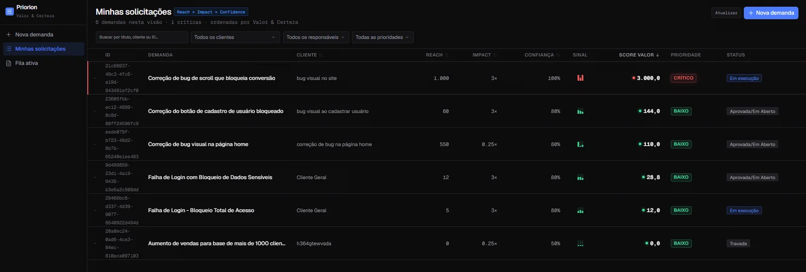
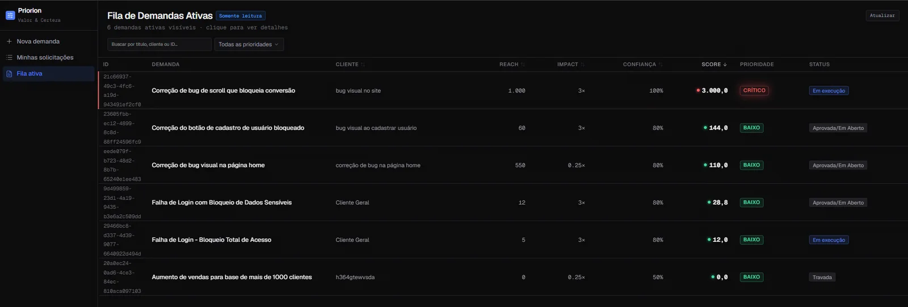
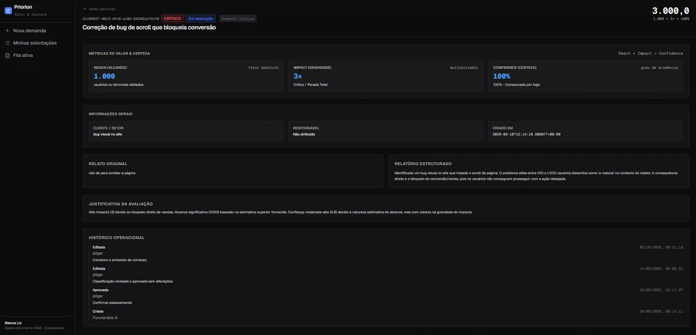
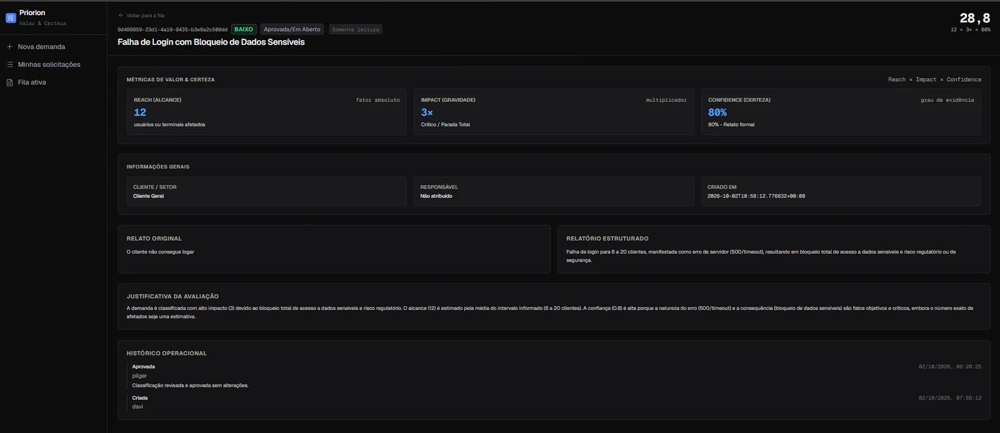

Informação faltando
O suporte registra o que o cliente escreveu, sem saber quantos usuários são afetados, qual a gravidade e qual a evidência.
O Priorion transforma chamados vagos em demandas estruturadas, pontuadas e prontas para entrar na fila de desenvolvimento.
Para software houses de 5 a 30 pessoas · Assinatura por empresa, sem cobrança por assento
O problema
O suporte registra o que o cliente escreveu, sem saber quantos usuários são afetados, qual a gravidade e qual a evidência.
O desenvolvimento precisa descobrir o contexto de cada chamado antes de começar a trabalhar nele.
Sem uma pontuação, a ordem da fila acaba seguindo a pressão do cliente ou a escalação da chefia.
Como funciona
Ele recebe o chamado do cliente, faz as perguntas que faltam e calcula uma pontuação. Uma pessoa do QA revisa antes de a demanda entrar na fila.
Cole o e-mail, o áudio transcrito ou a mensagem de WhatsApp do cliente e informe o setor impactado.
Ela pergunta quantos usuários são afetados, qual a gravidade e qual a evidência.
O Priorion calcula Reach × Impact × Confidence e escreve a justificativa.
Uma pessoa revisa, ajusta se precisar e libera. A demanda entra na fila ordenada por pontuação.
O que a sua equipe ganha
Cada demanda chega com relatório estruturado: alcance, gravidade e evidência já informados.
Todos os clientes são avaliados pelo mesmo critério, e a fila mostra o que vale mais primeiro.
Nenhuma demanda entra na fila sem a aprovação de uma pessoa do QA.
Fica registrado quem criou, aprovou e editou cada demanda, com data e motivo.
Você paga por empresa. Adicionar pessoas ao time não aumenta a mensalidade.
O produto
Telas reais do MVP, do chamado vago à fila priorizada.
O suporte cola o e-mail ou a mensagem do cliente, informa o setor e inicia o refinamento. A IA faz as perguntas que faltam para calcular Reach, Impact e Confidence.

Cada pessoa acompanha suas solicitações com pontuação, prioridade e status, com filtros por cliente, responsável e prioridade.

A mesma pontuação para todos os clientes. O que vale mais aparece primeiro, e o time inteiro entende por quê.

Reach, Impact e Confidence com a justificativa da IA, o relato original, o relatório estruturado e o histórico operacional.

Nenhuma demanda entra na fila sem a aprovação de uma pessoa do QA, e cada decisão fica registrada.

Planos e preços
Assinatura mensal por empresa. Todos os planos incluem as mesmas funções; muda apenas o limite de demandas processadas por mês.
Para equipes que estão começando a organizar a fila.
Para equipes com volume constante de chamados.
Para equipes com alto volume, sem limite mensal.
Perguntas frequentes
Não. A IA faz a entrevista e propõe a pontuação. Uma pessoa do QA revisa, ajusta se necessário e aprova antes de a demanda entrar na fila.
A assinatura é mensal e por empresa. O limite de cada plano é a quantidade de demandas processadas por mês, não o número de usuários.
Estamos buscando dez clientes-piloto na Região Sul até o fim do ano. Deixe seu contato e o plano de interesse, e a nossa equipe fala com você.
Informe sua empresa e o plano de interesse. Entramos em contato para começar.